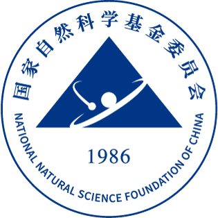
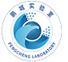

科研项目与产业合作
横向合作与企业研发
华为大模型压缩：多压缩策略自动组合优化
合作围绕大模型权重稀疏化与稀疏量化联合优化，研究多压缩策略自动组合，提升大模型推理与部署效率。本人承担项目管理与原创算法研发。项目获华为“产品线级优秀合作项目”，相关成果已落地产品，提升了昇腾产品竞争力。技术指标包括模型压缩率、推理加速比及精度保持。10B级LLM实现8倍压缩、4倍加速；70B级LLM实现10倍压缩、4.5倍加速。
MindPIPE：大模型自动压缩与量化框架
合作针对多模态编码器压缩敏感性不同、混合专家结构优化复杂及跨模态对齐易受压缩影响等问题，将量化、剪枝、蒸馏、恢复微调和自动评测纳入统一工作流，并开展GPU和华为昇腾环境部署适配。本人作为项目负责人，主导技术路线、核心压缩算法设计及研发执行，推动量化、剪枝、蒸馏、自动评测和硬件适配的端到端集成，负责将算法研究转化为可复用的压缩框架。相关工作旨在形成多模态大模型压缩与推理优化方案，减少重复调参与测试开销，降低显存和算力需求，提高不同计算平台上的部署效率。评价指标包括压缩率、推理加速比、峰值显存及任务精度损失。
华为车BU：多模态大模型低比特量化
合作面向车端多模态大模型的推理带宽与部署效率，研究权重、激活低比特量化及校准策略，涉及PTQ与PEFT场景下的QAT。本人作为项目负责人，主导模型量化合作与技术协同。评价指标关注权重与激活量化位宽、精度损失及推理带宽。
- 2026年至今
华为／海思端侧模型量化与推理加速
合作针对资源受限端侧平台的精度下降、内存限制与量化调优效率问题，研究模型转换、前后处理、推理实现及板端精度与性能评估，覆盖视觉和部分语音、文本任务。本人作为项目负责人，主导算法与芯片协同优化的技术路线，组织核心量化与推理算法研发，推动板端测试、性能优化及交付评审。合作正在推进，旨在形成可复用的端侧推理与量化优化方案，降低模型在小算力芯片上的适配成本，提高端侧AI应用开发效率。评价指标包括量化位宽、相对原模型的精度损失、内存占用、推理时延及后处理时延。
- 2021—2022年
阿里／天猫云端模型压缩与编译加速
合作面向高频调用、时延敏感及部署链路复杂的云端业务，研究编译优化驱动的模型设计，将结构选择与编译、评估和部署优化相结合，减少理论计算量与真实运行效率脱节的问题。本人作为项目负责人，主导模型压缩、自动结构搜索及模型评价方法设计，将算法方案与编译器、运行时约束结合，承担云端模型优化的关键算法研发。相关工作为候选模型评估和部署提供优化思路与技术方案，支持云端模型系统优化，帮助减少模型评估与上线过程中的重复优化成本。评价指标包括模型体积、编译后推理时延、候选模型评估开销及任务精度。
- 2021—2022年
荣耀手机图像超分辨率与轻量化增强
合作围绕手机图像超分辨率与增强，在终端NPU、ISP计算和存储约束下，结合神经网络结构搜索、动态分布剪枝与硬件感知压缩，探索适合手机运行环境的轻量化网络。本人作为项目负责人，主导轻量化网络、结构搜索与压缩方法设计，解决图像重建质量与手机端执行效率之间的关键算法问题。相关工作提供手机影像增强的轻量化模型方案，支持实时运行与部署优化，服务于终端算力、存储和响应速度之间的平衡。评价指标包括计算量、参数量、重建质量及手机端运行时延。相较同期代表性方法，计算量降低12.5倍、参数量降低24.8倍。
- 2021—2022年
vivo去摩尔纹与去阴影模型轻量化
合作面向手机影像去摩尔纹、去阴影任务，研究保留图像细节和处理质量的同时降低模型规模、存储需求和计算开销，结合模型压缩、结构搜索与终端硬件约束建模。本人作为项目负责人，主导压缩策略与硬件感知优化方法设计，解决图像恢复质量、模型规模和移动端计算开销之间的关键权衡。相关工作为移动端影像优化提供技术方案，提高模型在资源受限环境中运行和工程部署的可行性。评价指标包括图像恢复质量、模型规模、内存占用及终端推理时延。
腾讯优图智慧安防与消费级视觉研发
研发面向智慧安防与消费级视觉产品，涉及年龄变化带来的识别难度、大规模图像视频的检索定位效率，以及实时交互中的跟踪稳定性与计算开销。本人作为核心算法开发人员，负责识别、检索和跟踪方法研发，将高效训练、视觉特征表示和快速检索技术用于实际视觉系统。相关工作为智慧安防和消费级视觉应用提供算法支持，促进视觉方法从研究验证向业务系统应用转化。评价指标关注识别与检索质量、检索时延、跟踪稳定性及实时运行开销。
- 博士期间
滴滴交通场景视觉感知与快速定位研发
研发面向交通场景分析与视觉搜索，研究基于压缩视觉指纹的定位方法，将局部描述子的精细图像匹配与全局视觉指纹的大规模检索相结合，控制特征存储和搜索开销。本人作为核心算法开发人员，负责压缩视觉指纹、场景匹配及快速定位方法研发，解决大规模视觉检索的效率与存储约束问题。相关工作提供交通场景视觉检索与定位方案，支持场景理解和地图数据更新，服务于大规模地图信息处理的效率与准确性需求。评价指标包括定位精度、检索时延、特征存储量及大规模匹配效率。
- 博士期间
OPPO移动端视觉算法与轻量化部署研发
研发针对手机算力、存储和响应时延限制，开展视觉算法轻量化、模型压缩与硬件适配，将算法设计与终端实际运行条件结合，提高实际运行效率。本人作为项目负责人，主导面向移动端算力、内存和时延约束的模型结构优化、压缩与部署方法研发。相关工作提供移动硬件模型优化与部署方案，支持视觉模型从算法验证到终端适配，促进移动影像功能轻量化开发。评价指标包括视觉任务质量、模型体积、内存占用及移动端推理时延。


纵向科研、平台与学者支持

2026年1月—2029年12月面向大模型高效部署的神经网络结构自动搜索与压缩策略研究
围绕大模型高效部署，开展神经网络结构自动搜索与压缩策略研究。
- 2022年度
神经网络结构搜索关键技术研究
博士后阶段围绕候选架构评价、高效搜索与任务适应性开展研究。
- 2022年度
基于弱监督神经网络结构搜索研究
研究利用有限监督信息指导候选网络结构评价与选择的方法。

平台任务参与鹏城云脑建设与应急攻关任务参与
参与鹏城云脑平台建设与应急攻关任务。
- 科研支持
厦门大学小米青年学者项目
支持自动模型设计与大模型高效部署方向的科研发展和团队建设。